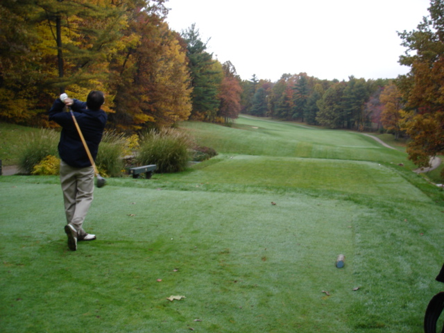
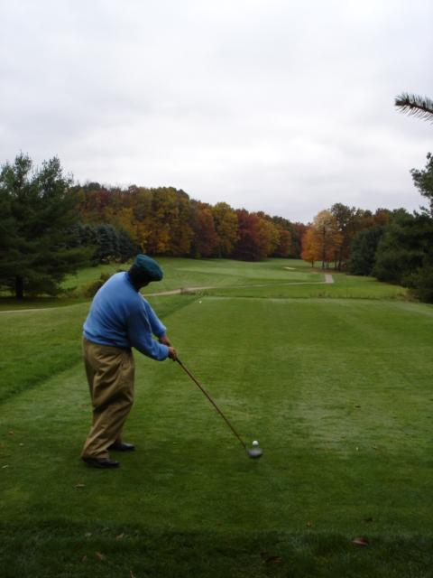
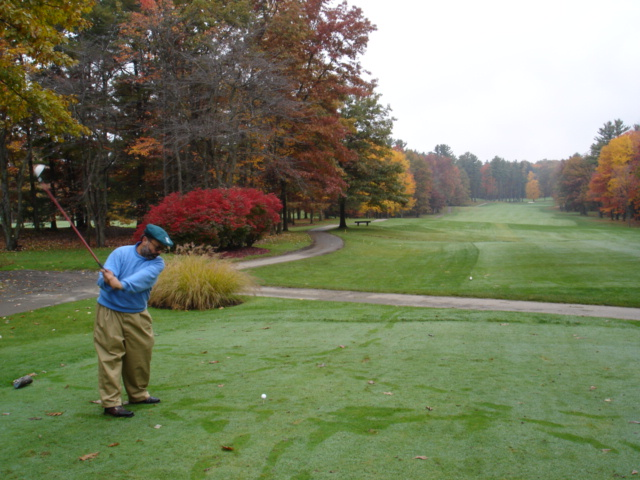
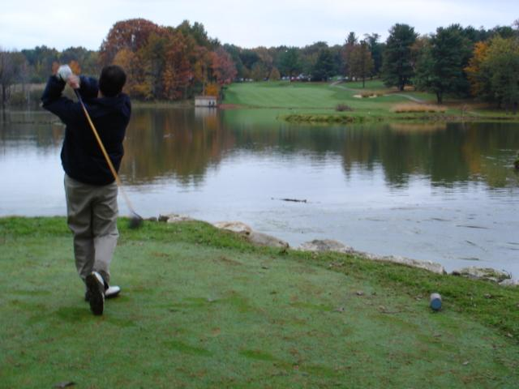

I am teeing off
on number 8 (632 yards away). Notice the colors on this fall day.
I am teeing off
on number 8 (632 yards away). Notice the colors on this fall day.
Dirk Mateer tees off
on number 5, dogleg left uphill.
Here I tee off on number
17, an uphill par 5.
Number 2 is a par
5, the fairway appears narrower in this picture than it really is.
 Bob Marshall tees off on number
9, a long tee shot over water.
Bob Marshall tees off on number
9, a long tee shot over water.
 Mateer with the same tee
shot on a fall day.